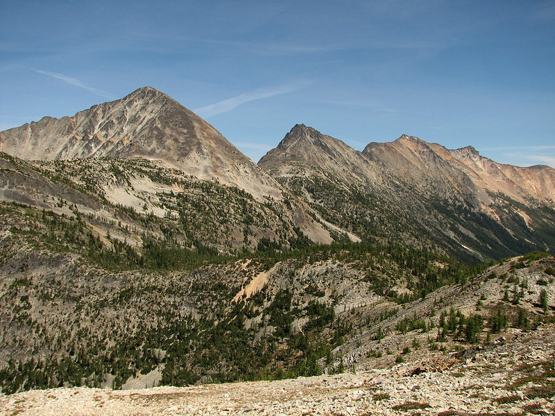
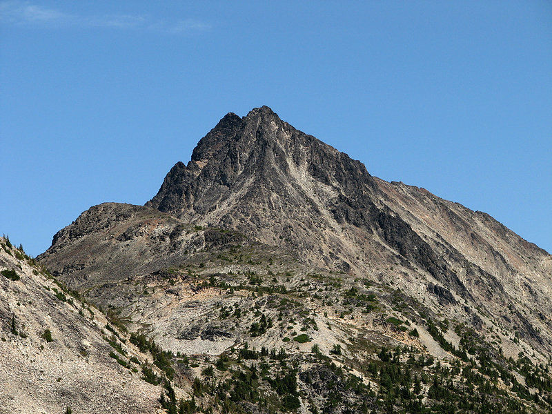

Pasayten Wilderness Research
The Pasayten Wilderness is in Washington's North Cascades, bordering Canada, and just east of Ross Lake and the Stephan Mather wilderness of North Cascades National Park:

Basic Orientation:
- Permits - None required; sign at trailhead
(Forest Permit Page)
- Crude Trail Mileages - from
National Forest page
- National Forest - Okanagon Wenatchee
- Weather - this summitpost
says it is relatively dry due to being east of the Cascade Crest.
But several trip reports (including that link) cite some rain.
Reasons I like Lease Lake:
- Great setting -- a lake in a deep (3000') valley surrounded by high peaks
- Day trip options -- six interesting peaks along the crest, all scramble-able
- Solitude -- the general vicinity is less traveled, and there are no trip reports camping at Lease Lake
- Access -- it is off trail and requires forethought, but people (including a family of four) scramble the peaks and cols in the vicinity. So it is nontrivial to access but not too hard.
- Distance -- it is two days' journey from the trailhead. No easy way to bail out early
- Route options -- there is one interesting through-hike option with a car drop (maybe a bit too long). There are two or three lollipop variations, with out-and-back as a fallback.
- Weather -- rain is a risk anywhere in the northern states, but this particular area is 5-10 miles east of the PCT, thus in the rain shadow of the Cascade crest, which lowers the rain risk
Some mileages, trip reports, and links:
- Osceola, Carru, Lago summit report (detailed text + photos)
- Made his base camp at Doris Lake
- Saw a family of four summit all 3 peaks
- Also summitted Blackcap Peak ("most interesting of the four")
- Photo of Osceola and Carru from Blackcap:

- A Flickr Osceola, Carru, Lago summit report (good text + photos)
- He has good photos looking in most directions in the area
- Photo of north face of Carru & Lago from Osceloa:

- Ferguson Lake trip in Falcon Guide
- Slate Pass to Ferguson Lake via Robinson Pass (478A) - 10.8 miles, 2400'
- Slate Pass to Robinson Pass - 5.1 miles, generally downhill but 500' of uphill
- It shows the 498A/575 Whistler connector and claims it is only a mile shorter (really?)
- Ferguson Lake trip report on nwhikers.net
(text and photos)
- Just covers the Slate to Ferguson area
- Not many text details. Ferguson Lake photo:

- Buckskin Ridge and Middle Pasayten trip report on nwhikers (lots of text + good photos)
- His latter days passed Berk Creek, day trips to Fred & Doris, and along Middle Pasayten
- Mileages are dubious (?)
- Best photos I've found of the Osceola/Carru/Lago ridge. Cols look hikable
- 
- Photo of Mt Carru:
- 
- Middle Fork Pasayten trip report (text only) says:
- Robinson Pass to Berk Creek - 6 miles
- Berk Creek to Doris Lake - 2 miles, 2200'
- Berk Creek to ShellRock Pass - 8 miles (unmaintained)
- Berk Creek to Point Defiance - 6 miles (unmaintained)
- SummitPost on Monument Peak
(mostly text)
- Gives detailed access info for Monument Peak
- Calls Eureka Valley trail "overgrown (wildly beautiful!)"
- Has some cross country details in Eureka Valley
- Covers the main access trails to the region
- Shellrock Pass from a guidebook
- Claims 7.3 miles, +3900' from Middle Fork Pasayten to Shellrock Pass
- Claims 2.4 miles to pass above Freds lake
- Quote: This remote trail journeys through some of the most rugged high country
in the Pasayten Wilderness [...] The route is well traveled as far as Freds Lake,
but beyond this point the trail has low maintenance priority and is the exclusive
domain of hard-core wilderness travelers.
- The next entry is for Monument Trail, which gives some details on the steep climb up
to Lake of the Woods (12 miles, no water for last 8, burned in 1986, huge elevation gain)
- Pass Butte and Lost Peak from
Washington Scrambles: best nontechnical ascents
- Slate Pass to Lost Peak: 40 miles RT, 7500' elevation gain
- Quote: This region provides delightful wandering because the terrain is open and unfettered
by the dense brush that can cause scramblers to curse the notorious bushwhacks of wetter
western regions
- Slate Pass to Whistler Cutoff Trail (498A/575) - 1.3 miles
- Slate Pass to Doris Lake (?) - 12 miles, 1800'
- Overall this book looks great. Should order it
- Long report on Ptarmigan trip (verbose text + unorganized photos)
- Verbose description of Ptarmigan Area details
- Calls Ptarmigan Peak one of the most fantastic views he has ever seen
- Mentions the col between Lago and Carru as "looked doable, and has been reported as such"
- Unclear how he got out from Ptarmigan to Middle Pasayten
- Trip report on Middle Pasayten + Buckskin (some text, many photos)
- Modest level of detail
- Pretty good photos
- Ptarmigan Traverse thoughts on SummitPost (text only)
- Specifically mentions Lease Lake
- Discusses several of the cols near Carru; they are reported as hikeable
- Three Fools Trail from northern PCT (almost Canada) to Ross Lake (beautiful photos)
- No great loop options for our timeline unless we hike the PCT and skip a stationary day
- Included this link mostly for the great photos of the general vicinity
- Ross Lake from Lightning Creek Trail:

- 2015 Wildfires - a Seattle friend said warned about high fire activity in 2015, but this map
shows no impact near Lease Lake (which is NW of Winthrop):